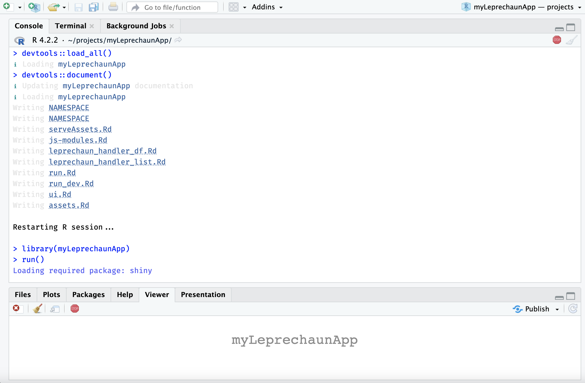
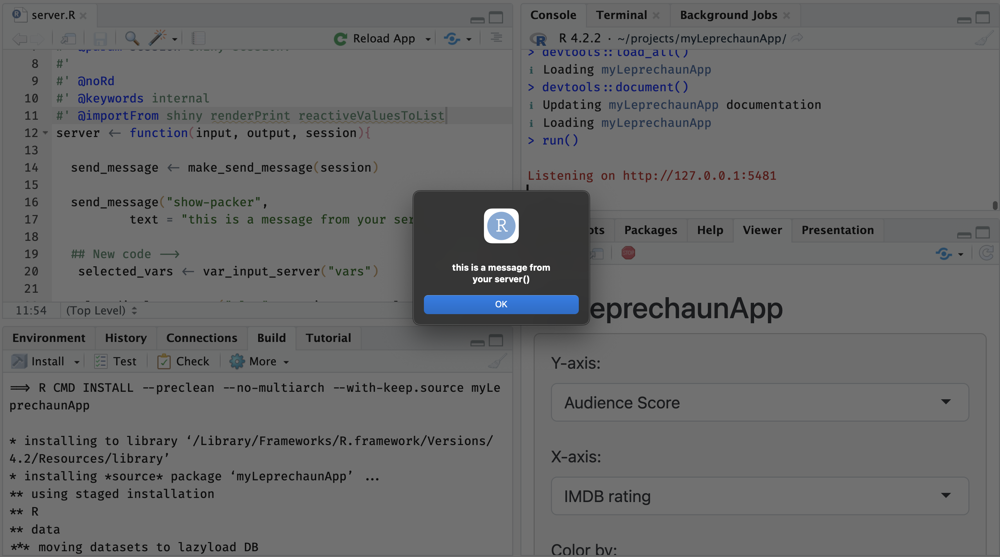
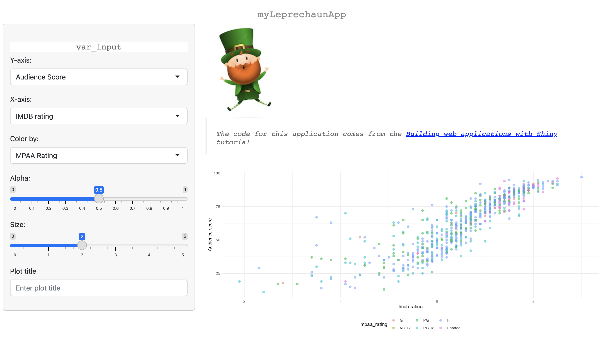

usethis::create_package("myLeprechaunApp")Shiny frameworks (part 4, leprechaun)
shiny
code
packages
This is the fourth post in a series on shiny app frameworks. In this post, I’ll build a ‘leaner and smaller’ shiny app using the leprechaun package and framework.
Framework comparisons
The original post that inspired this series compares ‘vanilla shiny’ (bare-bones shiny application), golem, leprechaun, and rhino across a series of dimensions (framework reliability, target type of developer, overall developing experience, etc.).
This series focuses on thee technical areas: Start, Build, and Use.
Start covers the steps required to begin building a shiny app with the framework (from the console and IDE), and any additional packages or dependencies.
Build covers the development process, which includes writing and storing code, data, external resources (like CSS or JavaScript), testing, etc.
Use shows how developers can launch their application using the given framework/package locally (i.e., within the RStudio (Posit) IDE), common workflow tips, and any aspects of the framework I found confusing while building the application.
In part 1, I built a ‘minimal’ shiny app (
VanillaApp)In part 2, I structured the shiny application as an R package using
usethisanddevtools, (myPkgApp).In post number three, I used the popular
golemframework (myGolemApp)
The GitHub repo with all shiny app setups is here.
myLeprechaunApp
leprechaun apps are built using the same methods as R packages (devtools and usethis), but are intended to be a ‘leaner and smaller’ version of golem.
Start
Click Code to see output
Code
✔ Creating '../projects/myLeprechaunApp/'
✔ Setting active project to '/Users/mjfrigaard/projects/myLeprechaunApp'
✔ Creating 'R/'
✔ Writing 'DESCRIPTION'
Package: myLeprechaunApp
Title: What the Package Does (One Line, Title Case)
Version: 0.0.0.9000
Authors@R (parsed):
* First Last <first.last@example.com> [aut, cre] (YOUR-ORCID-ID)
Description: What the package does (one paragraph).
License: `use_mit_license()`, `use_gpl3_license()` or friends to
pick a license
Encoding: UTF-8
Roxygen: list(markdown = TRUE)
RoxygenNote: 7.2.3
✔ Writing 'NAMESPACE'
✔ Writing 'myLeprechaunApp.Rproj'
✔ Adding '^myLeprechaunApp\\.Rproj$' to '.Rbuildignore'
✔ Adding '.Rproj.user' to '.gitignore'
✔ Adding '^\\.Rproj\\.user$' to '.Rbuildignore'
✔ Opening '/Users/mjfrigaard/projects/myLeprechaunApp/' in new RStudio session
✔ Setting active project to '<no active project>'When creating a new leprechaun package in the IDE, it’s identical to the R package setup.

myLeprechaunAppAfter the new project opens, install and load the leprechaun package, then run leprechaun::scaffold():
install.packages("leprechaun")
library(leprechaun)
leprechaun::scaffold()Click Code to see output
Code
── Scaffolding leprechaun app ─────────────────────────────────────────
── Creating lock file ──
✔ Creating .leprechaun
── Adding dependencies ──
✔ Adding 'shiny' to Imports in DESCRIPTION
✔ Adding 'bslib' to Imports in DESCRIPTION
✔ Adding 'htmltools' to Imports in DESCRIPTION
✔ Adding 'pkgload' to Suggests in DESCRIPTION
── Generating code ──
✔ Creating R/ui.R
✔ Creating R/assets.R
✔ Creating R/run.R
✔ Creating R/server.R
✔ Creating R/leprechaun-utils.R
✔ Creating R/_disable_autoload.R
✔ Creating R/zzz.R
✔ Creating R/input-handlers.R
✔ Creating inst/dev
✔ Creating inst/assets
✔ Creating inst/img
✔ Creating inst/run/app.R
── Ignoring files ──
✔ Adding '^\\.leprechaun$' to '.Rbuildignore'This results in the following folder tree:
myLeprechaunApp/
├── DESCRIPTION
├── NAMESPACE
├── R/
│ ├── _disable_autoload.R
│ ├── assets.R
│ ├── input-handlers.R
│ ├── leprechaun-utils.R
│ ├── run.R
│ ├── server.R
│ ├── ui.R
│ └── zzz.R
├── inst/
│ ├── assets/
│ ├── dev/
│ ├── img/
│ └── run/
│ └── app.R
└── myLeprechaunApp.Rproj
7 directories, 12 filesThis structure should look familiar if you’ve been following along with this series. The standard R package files and folders (DESCRIPTION, NAMESPACE, R/, and myLeprechaunApp.Rproj) are accompanied by multiple sub-folders in inst/ (recall that inst/ contents are available in the package when the package is installed).
Setup
In this section I’ll cover the initial files in the new leprechaun application.
R/
-
The
R/folder contents are below:- Some of these files should look familiar (
R/ui.R,R/server.R, andR/run.R)
└── R/ ├── _disable_autoload.R ├── assets.R ├── input-handlers.R ├── leprechaun-utils.R ├── run.R ├── server.R ├── ui.R └── zzz.R - Some of these files should look familiar (
-
The initial application files are created using
leprechaun::scaffold(), which takes the following options as function arguments:-
uicontrols the application layout (can be"fluidPage"or"navbarPage", defaults to"navbarPage") -
bs_versionBootstrap version (“If shiny > 1.6 is installed defaults to version 5, otherwise version 4” ) -
overwrite: Overwrite all files?
-
-
assets.R: contains theserveAssets()function, which will identify the modules using CSS or JavaScript and createdependencies, a list of metadata on the app. If you run the function after initially building yourleprechaunapp, you’ll see the following:Click on Code to view code in
R/assets.RCode
#' Dependencies #' #' @param modules JavaScript files names that require #' the `type = module`. #' @importFrom htmltools htmlDependency #' #' @keywords internal serveAssets <- function(modules = NULL) { # JavaScript files javascript <- list.files( system.file(package = "myLeprechaunApp"), recursive = TRUE, pattern = ".js$" ) modules <- get_modules(javascript, modules) javascript <- remove_modules(javascript, modules) # CSS files css <- list.files( system.file(package = "myLeprechaunApp"), recursive = TRUE, pattern = ".css$" ) # so dependency processes correctly names(css) <- rep("file", length(css)) names(javascript) <- rep("file", length(javascript)) # serve dependencies dependencies <- list() standard <- htmlDependency( "myLeprechaunApp", version = utils::packageVersion("myLeprechaunApp"), package = "myLeprechaunApp", src = ".", script = javascript, stylesheet = css ) dependencies <- append(dependencies, list(standard)) if (!is.null(modules)) { modules <- htmlDependency( "myLeprechaunApp-modules", version = utils::packageVersion("myLeprechaunApp"), package = "myLeprechaunApp", src = ".", script = modules, meta = list(type = "module") ) dependencies <- append(dependencies, list(modules)) } return(dependencies) } #' Module #' #' Retrieve and add modules from a vector of files. #' #' @param files JavaScript files #' @param modules JavaScript files names that require #' the `type = module`. #' @importFrom htmltools htmlDependency #' #' @keywords internal #' @name js-modules remove_modules <- function(files, modules) { if (is.null(modules)) { return(files) } # make pattern pattern <- collapse_files(modules) # remove modules files[!grepl(pattern, files)] } #' @rdname js-modules #' @keywords internal get_modules <- function(files, modules) { if (is.null(modules)) { return(NULL) } # make pattern pattern <- collapse_files(modules) # remove modules files[grepl(pattern, files)] } # collapse files into a pattern collapse_files <- function(files) { pattern <- paste0(files, collapse = "$|") paste0(pattern, "$") }serveAssets()Click on Code to view the initial output from
serveAssets()Code
[[1]] List of 10 $ name : chr "myLeprechaunApp" $ version : chr "0.0.0.9000" $ src :List of 1 ..$ file: chr "." $ meta : NULL $ script : Named chr(0) ..- attr(*, "names")= chr(0) $ stylesheet: Named chr(0) ..- attr(*, "names")= chr(0) $ head : NULL $ attachment: NULL $ package : chr "myLeprechaunApp" $ all_files : logi TRUE - attr(*, "class")= chr "html_dependency" _disable_autoload.Ris a way to disable theshiny::loadSupport()function. By default, shiny will load any top-level supporting.Rfiles in theR/directory adjacent to theapp.R/server.R/ui.Rfiles.-
input-handlers.R:Click on Code to view code in
R/input-handlers.RCode
#' Input Dataframe #' #' Converts the input received from the WebSocket #' to a data.frame. #' #' @param data Input data received from WebSocket. #' #' @keywords internal leprechaun_handler_df <- function(data){ do.call("rbind", lapply(data)) } #' Input List #' #' Forces the input received from the WebSocket #' to a list. This should really not be needed as #' it is handled like so by default. #' #' @param data Input data received from WebSocket. #' #' @keywords internal leprechaun_handler_list <- function(data){ return(data) } .onAttach <- function(...) { shiny::registerInputHandler( "myLeprechaunApp.list", leprechaun_handler_list, force = TRUE ) shiny::registerInputHandler( "myLeprechaunApp.df", leprechaun_handler_df, force = TRUE ) } -
leprechaun-utils.Rinitially contains themake_send_message()function (which is used in theR/server.Rbelow).Click on Code to view code in
R/leprechaun-utils.RCode
#' Create a Helper to Send Messages #' #' Create a function to send custom messages to the front-end, #' this function makes it such that the namespace is carried #' along. #' The namespace is appended as `ns`. #' The namespace with the optional hyphen is #' included as `ns2`. #' #' @param session Shiny session to derive namespace #' @param prefix A prefix to add to all types. #' Note that the prefix is followed by a hyphen `-`. #' #' @examples #' \dontrun{ #' send_message <- make_send_message(session) #' send_message("do-sth") #' send_message("do-sth-else", x = 1) #' #' # with prefix #' send_message <- make_send_message(session, prefix = "PREFIX") #' #' # this sends a message of type: #' # PREFIX-so-th #' send_message("do-sth") #' } #' #' @noRd #' @keywords internal make_send_message <- function(session, prefix = NULL) { ns <- session$ns(NULL) ns2 <- ns if (length(ns) > 0 && ns != "") { ns2 <- paste0(ns2, "-") } function(msgId, ...) { if (!is.null(prefix)) { msgId <- sprintf("%s-%s", prefix, msgId) } session$sendCustomMessage( msgId, list( ns = ns, ns2 = ns2, ... ) ) } } -
run.Rcontains functions for running the production (run()) and development version of the application (run_dev()):Click on Code to view code in
R/run.RCode
#' Run #' #' Run application #' #' @param ... Additional parameters to pass to [shiny::shinyApp]. #' #' @importFrom shiny shinyApp #' #' @export run <- function(...){ shinyApp( ui = ui, server = server, ... ) } #' Run Development #' #' Runs the development version which includes #' the build step. #' #' @keywords internal run_dev <- function(){ file <- system.file("run/app.R", package = "myLeprechaunApp") shiny::shinyAppFile(file) } -
server.Rby default createssend_messagewithmake_send_message(session)(seeR/leprechaun-utils.Rabove).Click on Code to view code in
R/server.RCode
#' Server #' #' Core server function. #' #' @param input,output Input and output list objects #' containing said registered inputs and outputs. #' @param session Shiny session. #' #' @noRd #' @keywords internal server <- function(input, output, session){ send_message <- make_send_message(session) } -
ui.Rholds theui()andassets()functions.assets()loads the resources called in theR/assets.Rfile (seeserveAssets()function above).Click on Code to view code in
ui()Code
#' Shiny UI #' #' Core UI of package. #' #' @param req The request object. #' #' @import shiny #' @importFrom bslib bs_theme #' #' @keywords internal ui <- function(req) { fluidPage( theme = bs_theme(version = 5), assets(), h1("myLeprechaunApp") ) }Click on Code to view code in
assets()Code
#' Assets #' #' Includes all assets. #' This is a convenience function that wraps #' [serveAssets] and allows easily adding additional #' remote dependencies (e.g.: CDN) should there be any. #' #' @importFrom shiny tags #' #' @keywords internal assets <- function() { list( serveAssets(), # base assets (assets.R) tags$head( # Place any additional depdendencies here # e.g.: CDN ) ) } -
zzz.Rcontainsshiny’saddResourcePath()function for adding images to the application (ininst/img/)Click on Code to view code in
R/zzz.RCode
.onLoad <- function(...){ shiny::addResourcePath( "img", system.file("img", package = "myLeprechaunApp") ) }
inst/run/app.R
-
app.Rcontains a file that looks like it would be used to run the application, but it’s not. This file contains a call toleprechaun::build(), thenpkgload::load_all().Click on Code to view code in
inst/run/app.R- This file is not run directly (check
leprechaun::add_app_file()):
- This file is not run directly (check
Build
Building leprechaun apps is similar to golem/R packages. New code is placed in the R/ folder, and application resources (CSS, SASS, JavaScript files) are added using one of the leprechaun::use_* functions:
More assets can be added using the leprechaun::use_packer() function.
Develop
The leprechaun::scaffold() defaults to a navbarPage(), but I’ll switch to a fluidPage() for this example.
After devtools::load_all() and devtools::document(), restarting and loading the package, I can run the application with run().

run()add_module()
Creating modules is simple with leprechaun::add_module().
-
The initial UI module:
leprechaun::add_module("var_input")✔ Creating R/module_var_input.R- Similar to
golem, this creates functions for the UI and server portions of the module.
#' var_input UI #' #' @param id Unique id for module instance. #' #' @keywords internal var_inputUI <- function(id){ ns <- NS(id) tagList( h2("var_input"), ) }- The initial server module:
#' var_input Server #' #' @param id Unique id for module instance. #' #' @keywords internal var_input_server <- function(id){ moduleServer( id, function( input, output, session ){ ns <- session$ns send_message <- make_send_message(session) # your code here } ) } # UI # var_inputUI('id') # server # var_input_server('id')- Note the
send_message <- make_send_message(session)invar_input_server(). I will show how this is used in the JavaScript section below.
- Similar to
The code for the var_input and plot_display modules are below.
-
The
R/module_var_input.Rfile:Click on Code to view code in
R/module_var_input.RCode
#' var_input UI #' #' @param id Unique id for module instance. #' #' @keywords internal #' #' @return shiny UI module #' @export var_inputUI #' #' @description A shiny Module. #' #' @importFrom shiny NS tagList selectInput #' @importFrom shiny sliderInput textInput var_inputUI <- function(id){ ns <- shiny::NS(id) shiny::tagList( shiny::selectInput( inputId = ns("y"), label = "Y-axis:", choices = c( "IMDB rating" = "imdb_rating", "IMDB number of votes" = "imdb_num_votes", "Critics Score" = "critics_score", "Audience Score" = "audience_score", "Runtime" = "runtime" ), selected = "audience_score" ), shiny::selectInput( inputId = ns("x"), label = "X-axis:", choices = c( "IMDB rating" = "imdb_rating", "IMDB number of votes" = "imdb_num_votes", "Critics Score" = "critics_score", "Audience Score" = "audience_score", "Runtime" = "runtime" ), selected = "imdb_rating" ), shiny::selectInput( inputId = ns("z"), label = "Color by:", choices = c( "Title Type" = "title_type", "Genre" = "genre", "MPAA Rating" = "mpaa_rating", "Critics Rating" = "critics_rating", "Audience Rating" = "audience_rating" ), selected = "mpaa_rating" ), shiny::sliderInput( inputId = ns("alpha"), label = "Alpha:", min = 0, max = 1, step = 0.1, value = 0.5 ), shiny::sliderInput( inputId = ns("size"), label = "Size:", min = 0, max = 5, value = 2 ), shiny::textInput( inputId = ns("plot_title"), label = "Plot title", placeholder = "Enter plot title" ) ) } #' var_input Server #' #' @param id Unique id for module instance. #' #' @keywords internal #' #' @return shiny server module #' @export var_input_server #' #' @importFrom shiny NS moduleServer reactive var_input_server <- function(id){ moduleServer( id, function( input, output, session ){ ns <- session$ns send_message <- make_send_message(session) # your code here return( list( "x" = shiny::reactive({ input$x }), "y" = shiny::reactive({ input$y }), "z" = shiny::reactive({ input$z }), "alpha" = shiny::reactive({ input$alpha }), "size" = shiny::reactive({ input$size }), "plot_title" = shiny::reactive({ input$plot_title }) ) ) } ) } # UI # var_inputUI('id') # server # var_input_server('id') -
The
R/module_plot_display.Rfile:- My
plot_dispaymodule collects the data from var_input and creates the plot with the custompoint_plot()function:
Click on Code to view code in
R/module_plot_display.RCode
#' plot_display UI #' #' @param id Unique id for module instance. #' #' @return shiny UI module #' @export plot_displayUI #' #' @description A shiny Module. #' #' @importFrom shiny NS tagList tags #' @importFrom shiny plotOutput plot_displayUI <- function(id){ ns <- shiny::NS(id) shiny::tagList( shiny::tags$br(), shiny::tags$blockquote( shiny::tags$em( shiny::tags$h6( "The code for this application comes from the ", shiny::tags$a("Building web applications with Shiny", href = "https://rstudio-education.github.io/shiny-course/" ), "tutorial" ) ) ), shiny::plotOutput(outputId = ns("scatterplot")) ) } #' plot_display Server #' #' @param id Unique id for module instance. #' #' @keywords internal plot_display_server <- function(id, var_input){ moduleServer( id, function( input, output, session ){ ns <- session$ns send_message <- make_send_message(session) # your code here movies <- myLeprechaunApp::movies inputs <- shiny::reactive({ plot_title <- tools::toTitleCase(var_inputs$plot_title()) list( x = var_inputs$x(), y = var_inputs$y(), z = var_inputs$z(), alpha = var_inputs$alpha(), size = var_inputs$size(), plot_title = plot_title ) }) output$scatterplot <- shiny::renderPlot({ plot <- point_plot( df = movies, x_var = inputs()$x, y_var = inputs()$y, col_var = inputs()$z, alpha_var = inputs()$alpha, size_var = inputs()$size ) plot + ggplot2::labs( title = inputs()$plot_title, x = stringr::str_replace_all( tools::toTitleCase( inputs()$x), "_", " "), y = stringr::str_replace_all( tools::toTitleCase( inputs()$y), "_", " ")) + ggplot2::theme_minimal() + ggplot2::theme(legend.position = "bottom") }) } ) } # UI # plot_displayUI('id') # server # plot_display_server('id') - My
After creating the modules, adding them to the UI (R/ui.R) and server (R/server.R) is straightforward.
-
The
R/ui.Rfile:Code
#' Shiny UI #' #' Core UI of package. #' #' @param req The request object. #' #' @import shiny #' @importFrom bslib bs_theme #' #' @keywords internal ui <- function(req) { fluidPage( theme = bs_theme(version = 5), assets(), h1("myLeprechaunApp"), # Begin new code --> shiny::sidebarLayout( shiny::sidebarPanel( var_inputUI("vars") ), shiny::mainPanel( plot_displayUI("plot") ) ) ## End new code <-- ) } -
The
R/server.Rfile:- The server also has the
make_send_message()function in it by default (more on that below).
Click on Code to view code in
R/server.RCode
#' Server #' #' Core server function. #' #' @param input,output Input and output list objects #' containing said registered inputs and outputs. #' @param session Shiny session. #' #' @noRd #' @keywords internal server <- function(input, output, session){ send_message <- make_send_message(session) ## New code --> selected_vars <- var_input_server("vars") plot_display_server("plot", var_inputs = selected_vars) ## New code <-- } - The server also has the
The other components of myLeprechaunApp were created using the standard usethis package development functions.
use_data_raw()
- the
moviesdata was added toinst/extdataand loaded into the package withusethis::use_data_raw()
use_r()
-
usethis::use_r()createdR/utils_plot_display.Rto hold thepoint_plot()functionClick on Code to view code in
R/utils_plot_display.RCode
#' Plot points (shiny) #' #' @param df input dataset (tibble or data.frame) #' @param x_var x variable #' @param y_var y variable #' @param col_var color variable #' @param alpha_var alpha value #' @param size_var size value #' #' @return plot object #' @export point_plot #' #' @importFrom ggplot2 ggplot aes geom_point #' #' @examples #' \donttest{ #' load( #' list.files( #' system.file("extdata", package = "myLeprechaunApp"), #' pattern = "movies", #' full.names = TRUE) #' ) #' point_plot(df = movies, #' x_var = "critics_score", #' y_var = "imdb_rating", #' col_var = "critics_rating", #' alpha_var = 1/3, #' size_var = 2) #' } point_plot <- function(df, x_var, y_var, col_var, alpha_var, size_var) { ggplot2::ggplot(data = df, ggplot2::aes(x = .data[[x_var]], y = .data[[y_var]], color = .data[[col_var]])) + ggplot2::geom_point(alpha = alpha_var, size = size_var) }
Now I can run devtools::load_all(), devtools::document(), restart and load the package, then run()
myLeprechaunAppinst/
leprechaun uses the inst/ folder similar to the golem framework, but instead of only loading the files in inst/app/www, leprechaun apps include four sub-folders that are ready at application runtime.
packer
To demonstrate how the make_send_message() function works, I’ll walk through the JavaScript example from the package website.
-
Run
packer::scaffold_leprechaun()packer::scaffold_leprechaun()Click on Code to view the output from
packer::scaffold_leprechaun()── Scaffolding leprechaun ────────────────────────────────────────────── ✔ Initialiased npm ✔ webpack, webpack-cli, webpack-merge installed with scope "dev" ✔ Added npm scripts ✔ Created srcjs directory ✔ Created srcjs/config directory ✔ Created webpack config files ── Adding files to .gitignore and .Rbuildignore ── ✔ Setting active project to '/Users/mjfrigaard/projects/myLeprechaunApp' ✔ Adding '^srcjs$' to '.Rbuildignore' ✔ Adding '^node_modules$' to '.Rbuildignore' ✔ Adding '^package\\.json$' to '.Rbuildignore' ✔ Adding '^package-lock\\.json$' to '.Rbuildignore' ✔ Adding '^webpack\\.dev\\.js$' to '.Rbuildignore' ✔ Adding '^webpack\\.prod\\.js$' to '.Rbuildignore' ✔ Adding '^webpack\\.common\\.js$' to '.Rbuildignore' ✔ Adding 'node_modules' to '.gitignore' ── Scaffold built ── ℹ Run `bundle` to build the JavaScript files ℹ Run `leprechaun::use_packer()` -
leprechaun::use_packer()✔ Creating inst/dev/packer.R ✔ Adding 'packer' to Suggests in DESCRIPTION ! This requires `leprechaun::build()` or the `leprechaun::build_roclet` -
leprechaun::build()✔ Running packer.R ✔ Bundled
Now I can see what new files have been added to the package/app.
-
In the
inst/dev/folder:- I can see the
packer.Rfile has been added
inst/dev/ └── packer.R 1 directory, 1 fileClick on Code to view the output from
packer.RCode
#' Bundle for Prod #' #' Bundles packer using packer. packer_bundle <- function(){ has_packer <- requireNamespace("packer", quietly = TRUE) if(!has_packer){ warning( "Requires `packer` package: `install.packages('packer')`\n", "Skipping.", call. = FALSE ) return() } packer::bundle() } packer_bundle() - I can see the
-
In the
srcjs/folder:- I can see how
modules/message.jsandindex.jscreate the alert withShiny.addCustomMessageHandler
srcjs/ ├── config │ ├── entry_points.json │ ├── externals.json │ ├── loaders.json │ ├── misc.json │ └── output_path.json ├── index.js └── modules └── message.jsThe JavaScript in
modules/message.jsandindex.js// srcjs/modules/message.js export const message = (msg) => { alert(msg); } // srcjs/index.js import { message } from './modules/message.js'; import 'shiny'; // In shiny server use: // session$sendCustomMessage('show-packer', 'hello packer!') Shiny.addCustomMessageHandler('show-packer', (msg) => { message(msg.text); }) - I can see how
To use the JS message scripts in srcjs/, I add the following to R/server.R:
-
In
R/server.Rsend_message <- make_send_message(session) send_message("show-packer", text = "this is a message from your server()")
After running devtools::load_all() and devtools::document(), the application loads with an alert:

send_message()I can also include messages from modules.
-
In
R/module_plot_display.Rsend_message <- make_send_message(session) send_message("show-packer", text = "this is a message from your plot_display module")
send_message() (module)Read more about sending JavaScript messages here on the shiny website.
img/
I’ll demonstrate how to use the inst/ folder by adding an image to the application.
-
Assume I want to add
leprechaun.jpgto my UI. I start by adding the file toinst/img/:inst/ └── img/ └── leprechaun.jpg <- new image file! -
Then I add the
img/path to the code to UI:ui <- function(req) { fluidPage( theme = bs_theme(version = 5), assets(), h1("myLeprechaunApp"), shiny::sidebarLayout( shiny::sidebarPanel( var_inputUI("vars") ), shiny::mainPanel( # new image shiny::tags$img(src = "img/leprechaun.jpg"), plot_displayUI("plot") ) ) ) }
Once again, run devtools::load_all() and devtools::document(), restarting and loading the package, then run the application with run()

inst/img/Sass
leprechaun also has helper functions for adding additional resources (or assets) to an application. I’ll work through the SASS example from the website below.
To add a Sass file, I can use leprechaun’s use_sass() function.
-
Run
leprechaun::use_sass()(no arguments):leprechaun::use_sass()- This will add files to
assets/anddev/and I see the following messages:
✔ Creating scss ✔ Creating inst/dev/sass.R ✔ Adding 'sass' to Suggests in DESCRIPTION ✔ Adding '^scss$' to '.Rbuildignore' ! This requires `leprechaun::build()` or the `leprechaun::build_roclet`- Below are the new files in
inst/dev/andsass/:
inst/ ├── scss/ │ ├── _core.scss │ └── main.scss └── dev/ └── sass.R - This will add files to
The scss/ folder is created by leprechaun::use_sass(), and it includes _core.scss and main.scss.
-
_core.scss: the original file is belowhtml{ .error { color: red } } -
I will change the
color:fromredto green (#38B44A) using$accent: #38B44A;$accent: #38B44A; html{ h1 { color: $accent; } } -
Then save this file and run
leprechaun::build()leprechaun::build()✔ Running packer.R ✔ Bundled ✔ Running sass.R
dev/
-
The
inst/dev/sass.Rfile contains asass_build()function-
sass_build()looks in thescss/folder formain.scssand creates theinst/assets/style.min.cssfile.
Click on Code to view code in
inst/dev/sass.RCode
#' Build CSS #' #' Build the sass sass_build <- function() { has_sass <- requireNamespace("sass", quietly = TRUE) if (!has_sass) { warning( "Requires `sass` package: `install.packages('sass')`\n", "Skipping.", call. = FALSE ) return() } output <- sass::sass( sass::sass_file( "scss/main.scss" ), cache = NULL, options = sass::sass_options( output_style = "compressed" ), output = "inst/assets/style.min.css" ) invisible(output) } sass_build() -
Once again, I run devtools::load_all(), devtools::document(), install and restart, then load the package and run()

myLeprechaunApp with new Sassassets/
How does leprechaun::build() work?
The assets/ folder contains the files generated by the .R scripts in the dev/ folder.
-
The contents of the
inst/dev/folder:inst/dev/ ├── packer.R └── sass.R 1 directory, 2 files -
The contents of the
inst/assets/folder:inst/assets/ ├── index.js └── style.min.css 1 directory, 2 files inst/dev/sass.Rcreatesinst/assets/style.min.cssandinst/dev/packer.Rcreatesinst/assets/index.js
“Do not call this function from within the app. It helps build things, not run them.” -
build.mdguide
check serveAssets()
After running leprechaun::use_sass() and leprechaun::build() (which adds the scss/ folder and the .R script in inst/dev/), I can re-check the serveAssets() function:
serveAssets()[[1]]
List of 10
$ name : chr "myLeprechaunApp"
$ version : chr "0.0.0.9000"
$ src :List of 1
..$ file: chr "."
$ meta : NULL
$ script : Named chr "assets/index.js"
..- attr(*, "names")= chr "file"
$ stylesheet: Named chr [1:2] "assets/style.min.css" "html/R.css"
..- attr(*, "names")= chr [1:2] "file" "file"
$ head : NULL
$ attachment: NULL
$ package : chr "myLeprechaunApp"
$ all_files : logi TRUE
- attr(*, "class")= chr "html_dependency"This shows me stylesheet has been updated with "assets/style.min.css" and script has been updated with "assets/index.js" (these files are loaded into the application when it runs).
Use
Running leprechaun apps:
When I initially create a new leprechaun package with leprechaun::scaffold(), I can run the application after a few quick steps:
Install and restart (optional)
myLeprechaunAppApp files:
-
R/: After the initial setup, theR/folder of a leprechaun app contains standardui.R,server.Rfiles, as well as therun.Rfunction for running the app.myLeprechaunApp/ └── R/ ├── _disable_autoload.R ├── assets.R ├── input-handlers.R ├── leprechaun-utils.R ├── run.R ├── server.R ├── ui.R └── zzz.R 1 directory, 8 files- The additional files are specific to the
leprechaunframework and workflow.
- The additional files are specific to the
Configure:
leprechaun app configuration files use the config package (similar to golem). Unlike the golem package, it’s not assumed I’ll be using a config.yml file, but I can easily add one with leprechaun::use_config().
use_config()adds ainst/config.ymlandR/config.R-
The default value in the
config.ymlfiles isproduction: true, which can be read usingconfig_read()inR/config.R.config_read()$production [1] TRUE- Values can be added to
inst/config.ymlusing the config file format, then theCONFIG_FILEcan be set as an environment variable
- Values can be added to
Workflow:
-
The
inst/folder contains various sub-folders for including external app resources (images, SASS, CSS, JavaScript, etc.).myLeprechaunApp/ └── inst/ ├── assets/ ├── dev/ ├── img/ └── run/ └── app.R 5 directories, 1 file -
leprechaunapps are packages, so theinst/folders are available to the application at runtime (which I can find usingsystem.file()).- Below I’ve passed the output from
system.file(".", package = "myLeprechaunApp")tofs::dir_tree()to view it’s contents:
Code
├── DESCRIPTION ├── INDEX ├── Meta/ │ ├── Rd.rds │ ├── data.rds │ ├── features.rds │ ├── hsearch.rds │ ├── links.rds │ ├── nsInfo.rds │ └── package.rds ├── NAMESPACE ├── R/ │ ├── myLeprechaunApp │ ├── myLeprechaunApp.rdb │ └── myLeprechaunApp.rdx ├── assets/ │ ├── index.js │ └── style.min.css ├── data/ │ ├── Rdata.rdb │ ├── Rdata.rds │ └── Rdata.rdx ├── dev/ │ ├── packer.R │ └── sass.R ├── extdata/ │ └── movies.RData ├── help/ │ ├── AnIndex │ ├── aliases.rds │ ├── myLeprechaunApp.rdb │ ├── myLeprechaunApp.rdx │ └── paths.rds ├── html/ │ ├── 00Index.html │ └── R.css ├── img/ │ └── leprechaun.jpg └── run/ └── app.R- I can see the
inst/folders and files I’ve created are available tomyLeprechaunAppat runtime:
Code
├── DESCRIPTION ├── NAMESPACE ├── assets/ │ ├── index.js │ └── style.min.css ├── dev/ │ ├── packer.R │ └── sass.R ├── extdata/ │ └── movies.RData └── img/ └── leprechaun.jpg - Below I’ve passed the output from
Recap
leprechaun delivers on its promise to be a ‘leaner and smaller’ version of golem. Most of the features in golem are also accessible in leprechaun. Including multiple inst/ sub-folders makes adding assets to the application easier, and leprechaun has a long list of use_* functions for including Sass, CSS, HTML, and JavaScript. The package website has examples for getting started and adding multiple resources, but unfortunately the function Reference had limited documentation.
leprechaun doesn’t come with any testing functions, although this can be done using testthat and shinytest2 (just as we would with a standard R package).
For the next (and last) post in this series, I will build a shiny application using the rhino package.